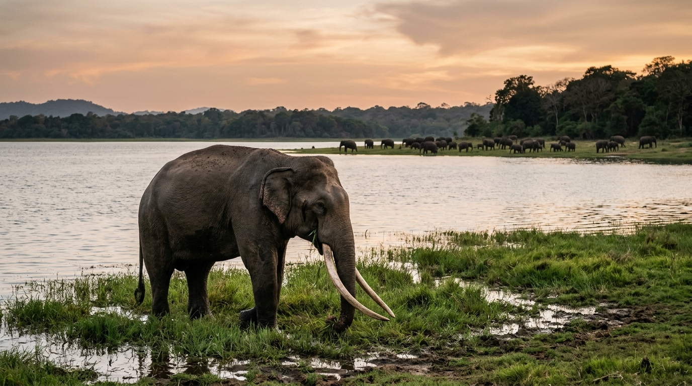
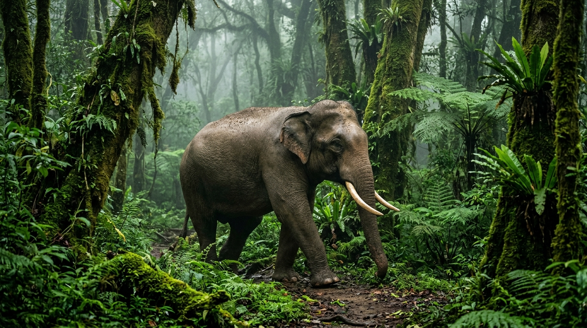

Most Famous Elephants of Sri Lanka: Living & Deceased
From the recently fallen 11-foot wild giant Kawanthissa and the living recovering wild tusker Agbo of Thirappane to the gentle 10.5-ft titan Nadungamuwa Raja and Maligawa chief Indi Raja.

Kawanthissa
කාවන්තිස්ස (ගල්ගමුවේ ඇතා)Regarded by wildlife biologists, photographers, and rural communities as the tallest and most magnificent wild tusker roaming the island in modern decades. Kawanthissa possessed extraordinary physical stature, standing nearly 11 feet tall with heavy, outward-swept ivory tusks. He represented the pinnacle of dry-zone pachyderm genetics in the northwestern province.

Agbo of Thirappane
තිරප්පනේ අග්බෝSri Lanka's most closely monitored living wild tusker. Agbo is a legendary solitary bull elephant of the ancient tank cascades of Anuradhapura who became a national hero in 2023 when he survived life-threatening gunshot injuries through an unprecedented multi-month veterinary rescue operation.

Mahasen of Minneriya
මින්නේරියේ මහසෙන් ඇතාNamed after the revered ancient monarch King Mahasen (who engineered the Great Minneriya Tank in 276–303 CE), this imposing wild patriarch is the crowning jewel of the annual Minneriya Elephant Gathering.

Galgamuwa Dala Poottuwa
ගල්ගමුවේ දළ පූට්ටුවාA mythic wild tusker celebrated for his extraordinarily rare 'Dala Poottuwa' morphology—tusks that crossed over each other symmetrically in front of his trunk. His brutal slaying by poachers in 2017 became the turning point in Sri Lankan wildlife law enforcement.

Nadungamuwa Vijaya Raja
නැදුන්ගමුවේ විජය රාජාAsia's tallest tamed tusker of the 21st century and an undisputed national hero. Declared a National Cultural Treasure by Presidential decree, Nadungamuwa Raja served as the Chief Relic Bearer of the Sacred Tooth Relic casket for 15 consecutive seasons.

Maligawa Raja
මාලිගාවේ රාජාThe most famous sacred elephant in the modern history of Buddhism. Maligawa Raja served as the Chief Relic Bearer of the Temple of the Sacred Tooth Relic for an astounding 50 years without a single behavioral infraction.

Indi Raja
ඉන්දි රාජාThe reigning supreme temple tusker of Sri Lanka. Indi Raja carries the golden Karanduwa in the Kandy Esala Perahera today, inheriting the mantle of Maligawa Raja and Nadungamuwa Raja.

Millangoda Raja
මිල්ලන්ගොඩ රාජාFamous throughout the zoological world for possessing the longest tusks recorded on any living Asian elephant in the 20th and 21st centuries, measuring an incredible 7.5 feet each.

Wasana of Kataragama
කතරගම වාසනාThe beloved chief sacred tusker dedicated to the shrine of God Skanda-Murugan in the holy city of Kataragama.

Heiyantuduwa Raja
හෙයියන්තුඩුවේ රාජාA revered temple tusker whose owner took the visionary step of donating his entire skeleton to science, where it stands today as the premier zoological exhibit in the National Museum of Colombo.